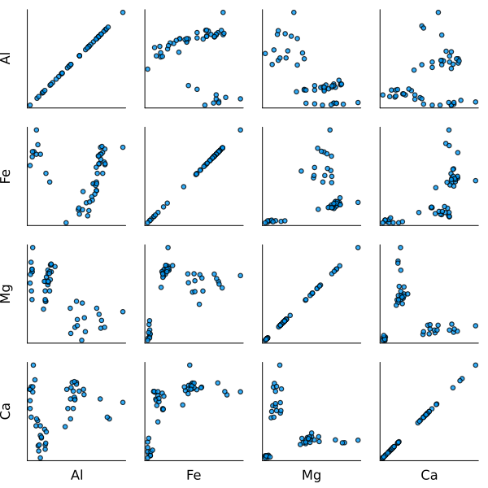
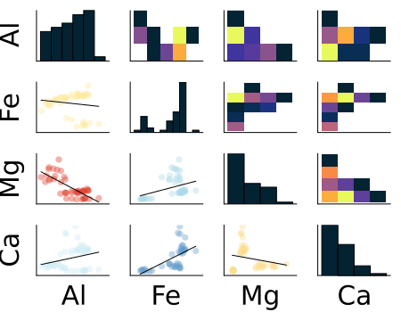
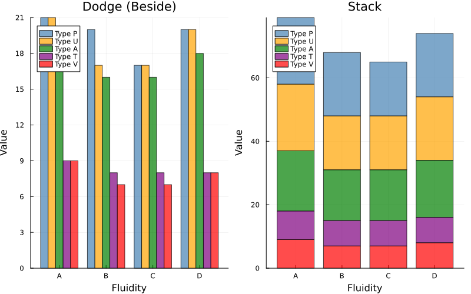

Introduction
Practical information
Teachers
- cours
- Emmanuel Pilliat (Me, in english)
- Frédéric Lavancier (in French)
- TD
- Théo Paquier (In English)
- Julien Jamme
- Théo Leroy
- Denis Mottin
- Marie Christiane Wambo / Koffi Amezouwui
About Me
- I arrived at ENSAI in Sep. 2024
- I give also lectures on hypothesis testing
- Before: PhD in Montpellier
- Research fields: crowdsourcing, active learning and parallel computing
Course Structure
- 8 lecture sessions
- Course materials and slides (both evolving) available on Moodle (French)
- And https://epilliat.github.io/
- 8 TD/TP sessions (tutorial/practical work)
Evaluation
- A short quiz at the beginning of each tutorial/practical session
- A one-hour midterm exam (1h) on November 4th (date to be confirmed)
- An exam (3h) on December 19th (date to be confirmed)
What is a regression model?
Goal: explain or predict
Explain a quantity \(Y\)
based on \(p\) quantities \(X^{(1)}, ..., X^{(p)}\) (explanatory variables, or regressors).
For this purpose, we have \(n\) observations of each quantity from \(n\) individuals.
Example: electricity consumption
\(Y\): daily electricity consumption in France
\(X= X^{(1)}\): average daily temperature
The data consists of a history of \((Y_1, \dots, Y_n)\) and \((X_1, \dots, X_n)\) over \(n\) days
Question: Do we have \(Y \approx f(X)\) for a certain function f?
Simplifying: Do we have \(Y \approx aX + b\) for certain values \(a\) and \(b\)? If yes, what is \(a\)? What is \(b\)? Is the relationship “reliable”?
Example: customer scoring
\(Y \in \{0,1\}\): customer quality (\(1\): good; \(0\): not good)
- \(X^{(1)}\): customer income
- \(X^{(2)}\): socio-professional category (6-7 possibilities)
- \(X^{(3)}\): age
Data: n customers.
In this case, we model \(p = P(Y = 1)\).
Do we have \(p \approx f(X^{(1)}, X^{(2)}, X^{(3)})\) for a function f with values in \([0, 1]\)?
Why model? Describe vs predict
Approximate relationship between \(Y\) and \(X^{(1)}\), …, \(X^{(p)}\) is a model.
Why seek to establish such a model? Two main reasons:
Descriptive objective: quantify the marginal effect of each variable.
For example, if \(X^{(1)}\) increases by 10%, how does \(Y\) change?
Predictive objective: given new values for \(X^{(1)}\), …, \(X^{(p)}\), we can estimate an approximation of corresponding \(Y\).
The four chapters
Introduction: Bivariate analysis, and general aspects of modelling
Linear Regression: Quantitative \(Y\) as a function of quantitative \(X^{(1)}\), …, \(X^{(p)}\)
Analysis of Variance and Covariance: Quantitative \(Y\) as a function of qualitative and/or quantitative \(X^{(1)}\), …, \(X^{(p)}\)
Generalized Linear Regression: Qualitative or quantitative \(Y\) as a function of qualitative and/or quantitative \(X^{(1)}\), …, \(X^{(p)}\)
Variables & data
Quantitative vs qualitative
\(X\) and \(Y\) can be
- Quantitative (they represent numbers)
- or Qualitative (modalities, e.g. colors)
Quantitative variables
A variable whose observation is a measured quantity.
- Discrete quantitative variables whose possible values are finite or countable (Examples: number of children, number of infractions, etc.)
- Continuous quantitative variables which can take any value within an interval (Examples: height, salary, etc.)
Qualitative Variables (or Factors)
A variable whose observation results in a category or code. Possible observations are called modalities
- ordinal qualitative variable: a natural order appears in the modalities (Examples: high school honors, etc.).
- nominal qualitative variable otherwise (Examples: gender, socio-professional category, etc.).
Example of the “Pottery” Dataset
Data: chemical composition of pottery found at different archaeological sites in the United Kingdom
| Site | Al | Fe | Mg | Ca | Na | |
|---|---|---|---|---|---|---|
| 1 | Llanedyrn | 14.4 | 7.00 | 4.30 | 0.15 | 0.51 |
| 2 | Llanedyrn | 13.8 | 7.08 | 3.43 | 0.12 | 0.17 |
| 3 | Llanedyrn | 14.6 | 7.09 | 3.88 | 0.13 | 0.20 |
| 4 | Llanedyrn | 10.9 | 6.26 | 3.47 | 0.17 | 0.22 |
| 5 | Caldicot | 11.8 | 5.44 | 3.94 | 0.30 | 0.04 |
| 6 | Caldicot | 11.6 | 5.39 | 3.77 | 0.29 | 0.06 |
| 7 | IsleThorns | 18.3 | 1.28 | 0.67 | 0.03 | 0.03 |
| 8 | IsleThorns | 15.8 | 2.39 | 0.63 | 0.01 | 0.04 |
| 9 | IsleThorns | 18.0 | 1.88 | 0.68 | 0.01 | 0.04 |
| 10 | IsleThorns | 20.8 | 1.51 | 0.72 | 0.07 | 0.10 |
| 11 | AshleyRails | 17.7 | 1.12 | 0.56 | 0.06 | 0.06 |
| 12 | AshleyRails | 18.3 | 1.14 | 0.67 | 0.06 | 0.05 |
| 13 | AshleyRails | 16.7 | 0.92 | 0.53 | 0.01 | 0.05 |
- Individuals: pottery numbered from 1 to 13
- Variables: the archaeological site (factor with 4 modalities) and different chemical compounds (quantitative).
Example of the “NO2traffic”
Data: NO2 concentration inside cars in Paris, type of road, (P, T, A, V or U) and traffic fluidity (A to D).
| NO2 | Type | Fluidity | |
|---|---|---|---|
| 1 | 378.94 | P | A |
| 2 | 806.67 | T | D |
| 3 | 634.58 | A | D |
| 4 | 673.35 | T | C |
| 5 | 589.75 | P | A |
| … | … | … | … |
| 283 | 184.16 | P | B |
| 284 | 121.88 | V | D |
| 285 | 152.39 | U | A |
| 286 | 129.12 | U | C |
- Individuals: vehicles numbered from 1 to 286
- Variables: NO2 (quantitative), type (factor with 5 modalities) and fluidity (ordinal factor with 4 modalities)
Bivariate analysis I — two quantitative variables
Pairwise Scatter Plots
We observe
\(X=(X_1, \ldots, X_n) \in \mathbb R^n\) and \(Y=(Y_1, \ldots, Y_n) \in \mathbb R^n\), (quantitative variables)
Relationship between \(X\) and \(Y\): scatter plot of points \((X_i, Y_i)\).
Example: Pottery Dataset

Correlation Plot

Linear Empirical Covariance and Variance
\(\DeclareMathOperator{\cov}{cov}\) \(\DeclareMathOperator{\var}{var}\)
Let \(\hat \var\) and \(\hat \cov\) denote the empirical variance and covariance:
\(\hat \cov(X,Y)= \frac{1}{n}\sum_{i=1}^{n}(X_i - \overline X)(Y_i - \overline Y)\)
\(\hat \var(X) = \hat \cov(X,X)\), \(\hat \var(Y)=\hat\cov(Y,Y)\)
Covariance = average signed area
Covariance = average signed rectangle area. Drag the points.
Linear Empirical Correlation
The linear relationship is quantified by Pearson’s linear correlation:
\[\hat \rho = \frac{\hat\cov(X,Y)}{\sqrt{\hat \var(X)\hat \var(Y)}}\]
Correlation: -1 ≤ ρ̂ ≤ 1
From the Cauchy-Schwarz inequality, we deduce that:
The correlation \(\hat \rho\) is always between \(-1\) and \(1\):
If \(\hat \rho = 1\): for all \(i\), \(Y_i = aX_i + b\) for some \(a > 0\)
If \(\hat \rho = -1\): for all \(i\), \(Y_i = aX_i + b\) for some \(a < 0\)
If \(\hat \rho = 0\): no linear relationship. notebook
Correlation explorer
Pearson’s \(\hat\rho\) measures only linear association.
Correlation test: hypotheses
\(\hat \rho(X, Y)\) is an estimator of the unknown theoretical correlation \(\rho\) between \(X\) and \(Y\) defined by \[\rho = \frac{\mathbb E[(X - \mathbb E(X))(Y - \mathbb E(Y))]}{\sqrt{\mathbb V(X)\mathbb V(Y)}}\]
Correlation test problem:
\[H_0: \rho = 0 \quad \text{VS}\quad H_1: \rho \neq 0\]
Correlation test: statistic
Test statistic (here we use \(\psi\) for test statistics and \(T\) for tests) \[\psi(X,Y) = \frac{\hat \rho\sqrt{n-2}}{\sqrt{1-\hat \rho^2}}\]
Test
Under \(H_0\), if \((X,Y)\) is Gaussian, \(\psi(X,Y) \sim \mathcal T(n-2)\) (Student distribution of degree of freedom \(n-2\))
\[T(X,Y) = \mathbf{1}\{|\psi(X,Y)| > t_{1-\alpha/2}\}\]
In R: cor.test
Significance test for ρ
Each sample gives a test statistic \(\psi=\hat\rho\sqrt{n-2}/\sqrt{1-\hat\rho^2}\). Under \(H_0:\rho=0\) it follows \(\mathcal T(n-2)\); the proportion of samples in the rejection zone estimates the power.
Least Square (p=1)
Given observations \((X_i, Y_i)\), we consider \(\hat \alpha\), \(\hat \mu\) that minimize, over all \((\alpha, \mu) \in \mathbb R^2\):
\[ L(\alpha, \mu) = \sum_{i=1}^n (Y_i - \alpha X_i - \mu)^2 \]
Solution: (check homogeneity!)
\[\hat \alpha = \frac{\hat \cov(X,Y)}{\hat \var(X)} \quad \text{and} \quad \hat \mu = \overline Y - \hat \alpha \overline X\]
Least squares, visually
The line with the smallest total square area. Drag the red handles.
Bivariate analysis II — two qualitative variables
Contingency Table and Notation
We observe \(X=(X_1, \dots, X_n)\) and \(Y=(Y_1, \dots, Y_n)\), where
- \(X_k \in \{1, \dots, I\}\) (factor with \(I\) categories, “colors”)
- \(Y_k \in \{1, \dots, J\}\) (factor with \(J\) categories, “bags”)
| Category X/Y | Bag 1 | Bag 2 | Bag 3 | Totals |
|---|---|---|---|---|
| Col 1 | \(n_{11}\) | \(n_{12}\) | \(n_{13}\) | \(R_1\) |
| Col 2 | \(n_{21}\) | \(n_{22}\) | \(n_{23}\) | \(R_2\) |
| Totals | \(N_1\) | \(N_2\) | \(N_3\) | \(N\) |
\(n_{ij}\): number of individuals having category \(i\) for \(X\) and \(j\) for \(Y\)
Example: NO2traffic dataset
contingency table of variable “Type” and “Fluidity”
| Fluidity/Type | P | U | A | T | V |
|---|---|---|---|---|---|
| A | 21 | 21 | 19 | 9 | 9 |
| B | 20 | 17 | 16 | 8 | 7 |
| C | 17 | 17 | 16 | 8 | 7 |
| D | 20 | 20 | 18 | 8 | 8 |
In R: table(X,Y)
In Julia

fluidity_types = ["A", "B", "C", "D"]
type_p = [21, 20, 17, 20]
type_u = [21, 17, 17, 20]
type_a = [19, 16, 16, 18]
type_t = [9, 8, 8, 8]
type_v = [9, 7, 7, 8]
# Create a matrix for the grouped bar plot
# Each row represents a fluidity type, each column represents a measurement type
data_matrix = hcat(type_p, type_u, type_a, type_t, type_v)
# Create a grouped bar plot
p1 = groupedbar(
fluidity_types,
data_matrix,
title="Dodge (Beside)",
xlabel="Fluidity",
ylabel="Value",
label=["Type P" "Type U" "Type A" "Type T" "Type V"],
legend=:topleft,
bar_position=:dodge,
color=[:steelblue :orange :green :purple :red],
alpha=0.7,
size=(800, 500)
)
p2 = groupedbar(
fluidity_types,
data_matrix,
title="Stack",
xlabel="Fluidity",
ylabel="Value",
label=["Type P" "Type U" "Type A" "Type T" "Type V"],
legend=:topleft,
bar_position=:stack,
color=[:steelblue :orange :green :purple :red],
alpha=0.7,
size=(800, 500)
)
plot(p1,p2)χ² test: hypotheses
\(\newcommand{\VS}{\quad \mathrm{VS} \quad}\) \(\newcommand{\and}{\quad \mathrm{and} \quad}\)
We observe
\(X=(X_1, \dots, X_n) \in \{1, \dots, I\}^n\) and \(Y=(Y_1, \dots, Y_n) \in \{1, \dots, J\}^n\)
Assumptions: \((X_k,Y_k)\) are independent, each pair has unknown distribution \(P_{XY}\)
dependency test problem:
\[H_0: P_{XY}=P_{X}P_Y \VS H_1: P_{XY} \neq P_{X}P_{Y}\]
Contingency table: definitions
Entries of the table:
\[n_{ij} = \sum_{k=1}^n \mathbf 1\{X_{k} = i\}\mathbf 1\{Y_k=j\}\]
Total proportion of individuals \(k\) of color \(X_k =i\):
\(\hat p_{i}=\frac{R_i}{N}\) \(= \tfrac{1}{N}\sum_{j=1}^{J}n_{ij}\)
χ² test: statistic
Chi-squared statistic, or chi-squared distance:
\[\psi(X,Y) = \sum_{i=1}^I\sum_{j=1}^J \frac{(n_{ij}- N_j\hat p_{i})^2}{N_j\hat p_{i}}\]
- Approximation: \(\psi(X,Y) \sim \chi^2((I-1)(J-1))\) when \(n \to \infty\)
- Test: \(T=\mathbf 1\{\psi(X,Y) \geq t_{1-\alpha}\}\), where
\(t_{0.95}\) =quantile(Chisq((I-1)*(J-1)), 0.95)
Bivariate analysis III — quantitative Y, qualitative X
Setting
We observe \(X=(X_1, \dots, X_n)\) and \(Y=(Y_1, \dots, Y_n)\), where
- \(X_k \in \{1, \dots, I\}\) (Quali)
- \(Y_k \in \mathbb R\) (Quanti)
Boxplot: represents the \(0, 25, 50, 75\) and \(100\) percentiles.
Singer Dataset (Julia StatsPlots)
\(X\): Height (in inches), \(Y\): Type of singer
Boxplot: (min, \(q_{1/4}\), median, \(q_{3/4}\), max) for each modality

Partial means
\(X=(X_1, \dots, X_n) \in \{1, \dots, I\}^n\), \(Y=(Y_1, \dots, Y_n) \in \mathbb R^n\)
if \(i \in \{1, \dots, I\}\), we define partial means as
\[N_i = \sum_{k=1}^n \mathbf 1\{X_k=i\} \and \overline Y_i = \frac{1}{N_i}\sum_{k=1}^n Y_k \mathbf 1\{X_k=i\}\]
Total mean:
\(\overline Y = \frac{1}{N}\sum_{k=1}^n Y_k = \frac{1}{N}\sum_{i=1}^I N_i \overline Y_i\)
Variance Decomposition
\[\frac{1}{n}\underbrace{\sum_{k=1}^n(Y_k - \overline Y)^2}_{SST} = \frac{1}{n}\underbrace{\sum_{i=1}^IN_i(\overline Y_i - \overline Y)^2}_{SSB} + \frac{1}{n}\underbrace{\sum_{i=1}^I\sum_{k=1}^n\mathbf 1\{X_k=i\}(Y_k - \overline Y_i)^2}_{SSW}\]
correlation ratio:
\[ \hat \eta^2 = \frac{SSB}{SST} \in [0,1]\]
This is an estimator of unknown \(\eta^2 = \frac{\mathbb V(\mathbb E[Y|X])}{\mathbb V(Y)}\)
Between vs within: drag the groups
Drag the group means apart → between-group spread and \(F\) grow; noise grows the within-group spread. Add groups or individuals and the degrees of freedom follow.
ANOVA test: hypotheses
\((X_1, \dots, X_n) \in \{1, \dots I\}^n\)
\((Y_1, \dots, Y_n) \in \mathbb R^n\)
Assumption: \(Y_k\) are independent, Gaussian of same variance. \(\mu_i = \mathbb E[Y|X=i]=\frac{\mathbb E[Y\mathbf 1\{X=i\}]}{\mathbb P(X=i)}\) (unknown)
Problem:
\[H_0: \mu_1=\dots \mu_I \VS H_1: \mu_i \neq \mu_j \text{ for some $i,j$}\]
ANOVA test: statistic
Test Statistic
\[\psi(X,Y) = \frac{SSB/(I-1)}{SSW/(N-I)}\]
\(\psi(X,Y) \sim \mathcal F(I-1, N-I)\) under \(H_0\)
From bivariate analysis to a model
Context
\(n\) individuals, \(p\) explanatory variables \(X=(X^{(1)}, \dots, X^{(p)})\).
Goal: Explain/Predict \(Y\) in function of \(X\)
We observe
\[Y=\begin{pmatrix} Y_1 \\ Y_2 \\ \vdots \\ Y_n \end{pmatrix} \and X=\begin{pmatrix} X^{(1)}_1 & \cdots & X^{(p)}_1 \\ X^{(1)}_2 & \cdots & X^{(p)}_2 \\ \vdots & & \vdots \\ X^{(1)}_n & \cdots & X^{(p)}_n \end{pmatrix}\]
Each individual \(k\) correspond to \(Y_k\) a row \((X^{(1)}_k, \dots, X^{(p)}_k)\)
Where is Randomness?
Generally, we don’t know any values a priori. Example:
- individual characteristics of a customer
\(Y\) and \(X^{(1)}, \ldots, X^{(p)}\) are random variables.
We observe realizations the \(Y\)’s and \(X\)’s
Sometimes \(X = (X^{(1)}, \ldots, X^{(p)})\) is chosen a priori. Example:
- \(X\): medication dosages (and \(Y\): a physiological response)
In this context, \(Y\) is random, but \(X^{(1)}, \ldots, X^{(p)}\) are not.
Summary:
\(Y\) is always viewed as a random variable
\(X^{(1)}, \ldots, X^{(p)}\) are viewed as random variables or deterministic variables, depending on the context
General Model
\(Y=(Y_1, \dots, Y_n)\)
\(X^{(k)} = (X^{(k)}_1, \dots, X^{(k)}_n)\), \(k= 1, \dots, p\) (row notation)
General model:
\[Y_i = F(X_i^{(1)}, \dots, X_i^{(p)}, \varepsilon_i)\]
- \(F\) is an unknown and deterministic function of \(p\) variables.
- \(\varepsilon_i\) are iid random representing external independent noise
Nonparametric problem: space of all \(F\) is of infinite dimension!
Linear Model
Idea: reduce to a smaller class of function \(F \in \mathcal F\).
Linear Model:
\[ Y_i = \mu + \beta_1 X^{(1)}_i + \beta_2 X^{(2)}_i + \dots + \beta_p X^{(p)}_i + \sigma \varepsilon_i \]
Space of affine function:
\[ \mathcal F = \{F:~ F(x, \varepsilon) = \mu + \beta^T x + \sigma \varepsilon, (\mu, \beta, \sigma) \in \mathbb R^{p+2}\} \]
\(\dim(\mathcal F) = p+2\) (number of unknown parameters)
much easier to estimate \(f\) (and perhaps less overfitting)
Why restrict the class 𝓕?
High degree chases the noise — why we restrict the model class.
What does “+” mean for a qualitative X?
If the \(X^{(k)}\) are qualitative factors,
What is the meaning of
\[ Y_i = \mu + \beta_1 X^{(1)}_i + \beta_2 X^{(2)}_i + \dots + \beta_p X^{(p)}_i + \sigma \varepsilon_i \]
Case of categorical variables
Encode each category
If \(Y \in \{A, B\}\) has \(2\) categories, we encode \[\widetilde Y = \mathbf 1\{Y = A\}\]
If \(Y\in \{A_1, \dots, A_K\}\), we use one hot encoding:
\[\widetilde{Y}_k = \mathbf 1\{Y=A_k\}\]
- Also encode \(X^{(1)}, \ldots, X^{(p)}\) if needed.
- see also the chapter on ANOVA and ANCOVA.
From random to deterministic X
If \(X^{(1)}, \ldots, X^{(p)}\) are random,
Then for all deterministic \(x^{(1)}, \dots, x^{(p)}\)
Conditionally to \((X^{(1)}=x^{(1)}, \dots, X^{(p)} =x^{(p)})\), we have the general model
\[Y = F(x^{(1)},\dots, x^{(p)}, \varepsilon)\]
- Because \(\varepsilon\) is independent of \(X\)
- Replace \(X^{(k)}\) by their observations \(x^{(k)}\).
- The only randomness is now in \(\varepsilon\)!